| Version 6.0.3 |
Creating useful, reliable tests requires more than just recording sequences and playing them back. You can fill a test-suite with lots of sequences in a short time, but you are bound to lose track of what you've got sooner or later if you do not organize your tests in some logical structure. QF-Test provides you with a number of structure elements to achieve this.
Before you start recording sequences and put them into a structure make sure that you
The essential prerequisite of getting the components right has been discussed in chapter 5. Here we are going to concentrate on structuring the actual test-sets, test-cases, test-steps, sequences, events, checks, etc.
|
|  |
||
|
| Figure 8.1: Test-suite structure | ||
QF-Test provides structure elements on different levels:
The QF-Test files for saving the tests and components in the file directory. These can be bundled in projects.
The 'Test-suite' has a set structure starting with the testing section that can hold any number of 'Test-set' nodes, which in turn can have any number of 'Test-case' nodes or more 'Test-sets'.
Next comes the 'Procedures' section, where you can place any number of 'Procedure' nodes. QF-Test provides 'Package' nodes as structure element in this section. A package node can hold any number of procedure nodes or more package nodes.
After that you will find the 'Extras' where you place any type of node and try out tests before moving them to the testing section.
The last section, 'Windows and components', is reserved for the components referenced by the tests.
QF-Test provides a number of structure elements for the tests themselves like 'Test-case' and 'Test-set' nodes as well as 'Setup' and 'Cleanup' nodes for setting up the preconditions for the tests, cleaning up after the test and error handling.
The 'Test-set' and 'Test-case' nodes provide a small-scale, pragmatic form of test management right inside QF-Test. Their main feature is the smart dependency management described in 'Dependency' nodes that allows 'Test-cases' to be implemented completely independent from each other. With properly written 'Dependencies', cleanup of the SUT for previously executed tests is handled automatically along with the setup for the next test and all error handling.
Conceptually a 'Test-case' node represents a single elementary test case. As such it is the main link between test planning, execution and result analysis. With the help of 'Dependencies', 'Test-cases' can be isolated from each other so that they can be run in any arbitrary order. QF-Test automatically takes care of the necessary test setup. Cleanup is also automatic and will be performed only when necessary in order to minimize overhead in the transition from one test to the next. This enables things like running subsets of functional test-suites as build tests or retesting only failed 'Test-cases'.
'Test-sets' basically are bundles of 'Test-cases' that belong together and typically have similar requirements for setup and cleanup. 'Test-sets' can be nested. The whole structure of 'Test-sets' and 'Test-cases' is very similar to 'Package' and 'Procedure' nodes. The 'Test-suite' root node can be considered a special kind of 'Test-set'.
'Test-suite', 'Test-set' and 'Test-case' nodes can be called from other places using a 'Test call' node. That way, tests that run only a subset of other tests can easily be created and managed. 'Test call' nodes are allowed everywhere, but should not be executed from within a 'Test-case' node because that would break the atomicity of a 'Test-case' from the report's point of view. A warning is issued if 'Test-case' execution is nested.
As both 'Test-sets' and 'Test-case' can be called via a 'Test call' node they each have a set of default parameters similar to those of a 'Procedure'. These will be bound on the secondary variable stack and can be overridden in the 'Test call' node.
A 'Test-case'
has an additional set of variable bindings. These are
direct bindings for the primary variable stack that will be defined during the execution
of the 'Test-case' and cannot be overridden via a 'Test call' node or the command line
parameter -variable <name>=<value>. Primary and secondary variable stack are described in
section 6.1.
The list of 'Characteristic variables' is a set of names of variables that are part of the characteristics of the test for data-driven testing. Each execution of the 'Test-case' with a different set of values for these variables is considered a separate test case. The expanded values of these variables are shown in the run-log and report for improved error analysis.
Another useful attribute is the 'Condition' which is similar to the 'Condition' of an 'If' node. If the 'Condition' is not empty, the test will only be executed if the expression evaluates to true. Otherwise the test will be reported as skipped.
Sometimes a 'Test-case' is expected to fail for a certain period of time e.g. when it is created prior to the implementation of the respective feature or before a bug-fix is available in the SUT. The 'Expected to fail if...' attribute allows marking such 'Test-cases' so they are counted separately and don't influence the percentage error statistics.
The primary building block of a test are the 'Sequence' and 'Test-step' nodes which execute their child nodes one by one in the order as they appear. They are used to structure the child nodes of a 'Test-case'.
The difference between 'Sequence' and 'Test-step' nodes is that 'Test-step' nodes will show up in the report whereas 'Sequences' will not.
Since it is in the nature of testing that tests may fail from time to time it is crucial to have structure elements that will help you set up a defined initial state for a test. 'Setup' and 'Cleanup' nodes are for simple cases and are inserted as child nodes of 'Test-case' nodes. However, in most cases 'Dependency' nodes, that contain 'Setup' and 'Cleanup' nodes, will prove far more efficient.
'Test-case' nodes with well designed 'Setup' and 'Cleanup' nodes have the following properties important to successful testing:
In the simplest case exactly the same initial condition is required by all the 'Test-case' nodes of a 'Test-set'. This can be implemented via the following structure:
|
| 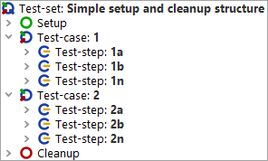 | ||
|
| Figure 8.2: Test structure with simple 'Setup' and 'Cleanup' | ||
In the run-log you can see that for each 'Test-case' node first the 'Setup' node and then the 'Cleanup' node is run:
|
| 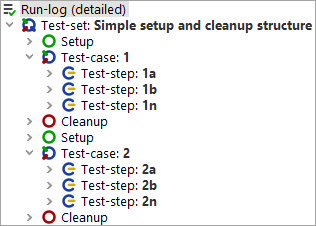 | ||
|
| Figure 8.3: Test execution with simple 'Setup' and 'Cleanup' | ||
In this simple example the cleanup is done in any case, even if the next test could be executed with the state the previous test left the SUT in. QF-Test provides a more comprehensive structure for setting up the SUT and handling cleanup much more efficiently, and even including error handling. This is explained in chapter section 8.6 in detail.
In a way, writing good tests is a little like programming. After mastering the initial steps, tests and source code alike tend to proliferate. Things work fine until some building block that was taken for granted changes. Without a proper structure, programs as well as tests tend to collapse back upon themselves at this point as the effort of adapting them to the new situation is greater than the one needed for recreating them from scratch.
The key to avoiding this kind of problem is reuse or avoidance of redundancy. Generating redundancy is one of the main dangers of relying too much on recording alone. To give an example, imagine you are recording various sequences to interact with the components in a dialog. To keep these sequences independent of each other, you start each one by opening the dialog and finish it by closing the dialog again. This is good thinking, but it creates redundancy because multiple copies of the events needed to open and close the dialog are contained in these sequences. Imagine what happens if the SUT changes in a way that invalidates these sequences. Let's say a little confirmation window is suddenly shown before the dialog is actually closed. Now you need to go through the whole suite, locate all of the sequences that close the dialog and change them accommodate the confirmation window. Pure horror.
To stress the analogy again, this kind of programming style is called Spaghetti Programming and it leads to the same kind of maintenance problems. These can be avoided by collecting the identical pieces in one place and referring to them wherever they are needed. Then the modifications required to adapt to a change like the one described above are restricted to this place only.
|
| 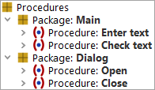 | ||
|
| Figure 8.4: 'Packages' and 'Procedures' | ||
QF-Test comes with a set of nodes that help to achieve this kind of modularization, namely the 'Procedure', 'Procedure call' and 'Package' nodes. A 'Procedure' is similar to a 'Sequence' except that its 'Name' attribute is a handle by which a 'Procedure call' node can refer to it. When a 'Procedure call' is executed, the 'Procedure' it refers to is looked up and execution continues there. Once the last child node of the 'Procedure' has finished, the 'Procedure call' has completed as well.
'Packages' are just a way to give even more structure to 'Procedures'. A hierarchy of 'Packages' and 'Procedures', rooted at the special 'Procedures' node, is used to group sets of 'Procedures' with a common context together and to separate them from other 'Procedures' used in different areas.
A 'Procedure' that always does exactly the same, no matter where it is called from, is only marginally useful. To expand on the above example, let's say we want to extend the 'Procedure' that opens the dialog to also set some initial values in some of its fields. Of course we don't want to have these initial values hard-coded in the 'Procedure' node, but want to specify them when we call the 'Procedure' to get different values in different contexts. To that end, parameters can be defined for the 'Procedure'. When the 'Procedure call' is executed, it specifies the actual values for these parameters during this run. How all of this works is explained in Variables. Also please take a look at the detailed explanation for the 'Procedure' and 'Procedure call' nodes for a better understanding of how these complement each other.
A test-suite library with a set of commonly useful 'Procedures' is
provided with QF-Test under the name qfs.qft. An entire
chapter of the Tutorial is devoted to this library and section 23.1 explains how to include it in your
test-suites.
If you work with several test-suite libraries you might face a situation, where you define reusable test-steps or sequences, which you only want to use within a dedicated test-suite. If you want to create such local 'Procedures', you can put a '_' as first sign of the procedure's name. This marks a 'Procedure' as test-suite local.
A call of a local 'Procedure' can only be inserted within the test-suite, where it is defined. You can use the same concept for local 'Packages'.
If you call 'Procedures' from other 'Procedures', it could be convenient not to specify the full procedure name all the time.
So called 'relative' procedure calls can only be added to a 'Package', which has the 'Border for relative calls' (see 'Border for relative calls') attribute specified. The structure of that call follows the concept below:
|
|
|
||||||||||
|
| Table 8.1: Relative procedure calls | ||||||||||
As you can see each dot stands for one level. So calling a 'Procedure' two levels higher requires three dots (Current level also requires a dot.)
As you should organize your tests in separate test steps, which are ideally the same like QF-Test's procedures, QF-Test offers several ways to insert those 'Procedure call' nodes:
This approach is also valid for inserting 'Dependency reference' nodes, except the keyboard shortcut.
You can create parameters for a 'Procedure', 'Dependency' or 'Test-case' automatically via the menu »Operations«-»Parameterize node«.
The parameter details dialog allows you to define for which actions you want to create parameters, e.g. only text-inputs or check nodes.
This transformation is very useful for developing procedures immediately after recording! Under 'Extras' you can convert a recorded 'Sequence' node into a 'Procedure' and move that to the 'Procedures' node.
3.1+ If you transform a 'Sequence' under 'Test-cases' QF-Test automatically creates a 'Procedure' node and inserts a 'Procedure call' to the previous location of the transformed node.
 Video: Dependencies
Video: Dependencies
Dependencies are a powerful and optimized concept for handling pre- and post-conditions. They are indispensable when running tests in the QF-Test Daemon mode mode. They basically work the following way:
Test-cases as well as other dependencies can make use of 'Dependency' nodes placed in the 'Procedures' section via 'Dependency reference' nodes. Therefore, 'Setup' and 'Cleanup' nodes placed in a 'Dependency' node can be used by various test-cases - in contrast to those placed directly in 'Test-case' or 'Test-set' nodes.
In order to understand the concept of 'Dependency' nodes it might be helpful to have a look at how a manual tester would proceed: He would do the setup for the first test case and then run it. In case of errors he may want to run special error cleanup routines. After that he would first check the requirements of the second test case. Only then would he do any cleanup. And he would only clean up as much as is necessary. Next he would check that the SUT still meets all preconditions required by the next test case and if not execute the necessary steps. In case the previous test case failed badly he might need to clean up the SUT completely before being able to set up the initial condition for the second test case.
This is exactly what you can implement using QF-Test 'Dependencies'.
'Dependencies' give an answer to the disadvantages of the classical 'Setup' and 'Cleanup' nodes where 'Setup' nodes can only be nested by nesting test-sets and where 'Cleanup' nodes will be executed in any case, both of which is not very efficient. Moreover, 'Dependency' nodes provide structure elements for handling errors and exceptions.
Quite a number of the provided sample test-suites make use of 'Dependencies', e.g.:
doc/tutorial named dependencies.qft.
You will find a detailed description in the tutorial in chapter 16.
demo/carconfig named carconfig_en.qft,
showing a realistic example.
swt_addressbook.qft, with an example
for SWT users
demo/eclipse named eclipse.qft,
containing nested 'Dependencies'.
datadriver.qft in doc/tutorial also uses
'Dependencies'.
Single-stepping through these suites in the debugger, looking at the variable bindings and examining the run-logs should help you to familiarize yourself with this feature. Please take care to store modified test-suites in a project-related folder.
You can define 'Dependencies' in two places:
One 'Dependency' should deal with one precondition. Then you can reduce the test overhead generated by cleanup activities. In case a 'Dependency' itself relies on preconditions these should be implemented in separate 'Dependency' nodes. 'Dependencies' can either be inherited from a parent node or referred to explicitly via 'Dependency reference' nodes.
The implementation of the actual pre- and post-conditions is done in the 'Setup' and 'Cleanup' nodes of the 'Dependency'.
In case a 'Test-set' or 'Test-case' node has a 'Dependency' node as well as 'Setup' and 'Cleanup' nodes the 'Dependency' will be executed first. 'Setup' and 'Cleanup' nodes have no influence on the dependency stack.
The execution of a 'Dependency' has three phases:
The examples used in this chapter all refer to tests with the following preconditions and cleanup activities:
Before executing a 'Test-case' node QF-Test checks whether it has a 'Dependency' node of its own and/or inherits one from its parent nodes. In that case QF-Test checks whether the 'Dependency' node itself relies on other dependencies. Based on this analysis QF-Test generates a list of the dependencies required. This is done in step 1 of the example below.
Next, QF-Test checks if previous tests have already executed dependencies. If so, QF-Test checks if it has to execute any 'Cleanup' nodes. After that QF-Test goes through all the setup nodes, starting with the most basic ones. The name of each 'Dependency' executed is noted down in a list called dependency stack. See step 2 of below example.
Test of application module 1. First test-case to be executed.
In the run-log you can see exactly what QF-Test did:
|
| 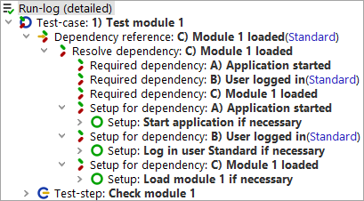 | ||
|
| Figure 8.5: Dependency stack A-B-C | ||
After executing the test-case the application remains in the condition the last test-case left it in. Only after analyzing the dependencies of the next test-case 'Cleanup' nodes might be run and the respective 'Dependency' be deleted from the dependency stack. When 'Cleanup' nodes need to be run they are executed in reverse order to the 'Setup' nodes. After maybe clearing up dependencies no longer needed the 'Setup' nodes of all required 'Dependencies' are executed. Just like a manual tester will check that all requirements for the next test-case are fulfilled QF-Test will do the same. A manual tester may not be conscious of checking the basic requirements. However, if he notices that the last test-case left the application in a very bad state like a deadlock, he will probably kill the process if nothing else helped and start it again. To this end QF-Test explicitly runs all 'Setup' nodes. These should be implemented in a way that they first check if the application is already in the required state and just in case not run the whole 'Setup' node.
|
| 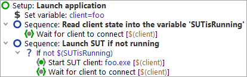 | ||
|
| Figure 8.6: Good practice 'Setup' node | ||
'Setups' nodes should first check if the required condition already exists before actually executing the node. 'Cleanup' nodes should first check if the requested cleanup action (e.g. closing a dialog) has already been performed. Also they should be programmed in such a way that they are in grade of clearing up error states of the application (e.g. error messages) so that a failed test-case will not affect the following ones.
Test a dialog in application module 2
You can see in the run-log that the cleanup was done:
|
| 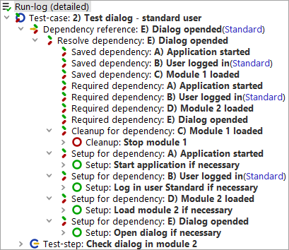 | ||
|
| Figure 8.7: Dependency stack A-B-D-E | ||
Values of certain variables may determine whether a dependency has to be cleared up and the setup re-executed, like the user name for dependency B 'Login'. These variables are called 'Characteristic variables'. The values of the 'Characteristic variables' are always taken into account when comparing dependency stacks. Two 'Dependencies' on the stack are only considered identical if the values of all 'Characteristic variables' from the previous and the current run are equivalent. Consequently it is also possible for a 'Dependency' to directly or indirectly refer to the same base 'Dependency' with different values for its 'Characteristic variables'. In that case the base 'Dependency' will appear multiple times in the linearized dependency stack.
Furthermore, QF-Test stores the values of the 'Characteristic variables' during execution of the 'Setup' of a 'Dependency'. When the 'Dependency' is rolled back, i.e. its 'Cleanup' node is executed, QF-Test will ensure that these variables are bound to the same value as during execution of the 'Setup'. This ensures that a completely unrelated 'Test-case' with conflicting variable definitions can be executed without interfering with the execution of the 'Cleanup' nodes during 'Dependency' rollback. Consider for example the commonly used "client" variable for the name of an SUT client. If a set of tests for one SUT has been run and the next test will need a different SUT with a different name, the "client" variable will be changed. However, the 'Cleanup' node for the previous SUT must still refer to the old value of "client", otherwise it wouldn't be able to terminate the SUT client. This is taken care of automatically as long as "client" was added to the list of 'Characteristic variables'.
In the run-log you can see the values of the 'Characteristic variables' behind the respective 'Dependency':
|
| 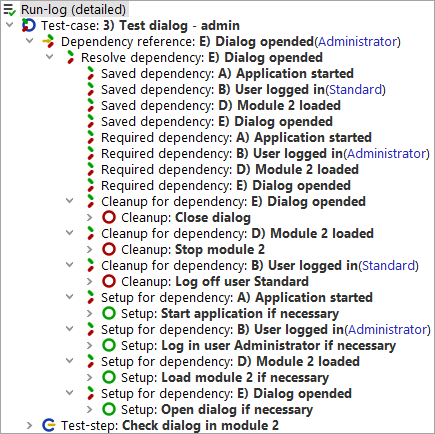 | ||
|
| Figure 8.8: 'Dependency' with 'Characteristic variables' | ||
Other examples for 'Characteristic variables' are JDK versions when the SUT needs to be tested for various JDK versions or the browser name with web applications. In our example these would be specified as 'Characteristic variables' for 'Dependency' A.
In some use cases it may be necessary to execute the 'Cleanup' node of a 'Dependency' after each 'Test-case'. Then you should set the attribute 'Forced cleanup'.
If 'Forced cleanup' is activated for a 'Dependency' node on the list of dependencies the 'Cleanup' node of this and maybe of subsequent 'Dependencies' will be executed.
In this example the test logic requires module 2 to be stopped after test execution. The attribute 'Forced cleanup' is activated for 'Dependency' D.
In our example the 'Cleanup' nodes of 'Dependencies' E (close dialog) and D (stop modul) would be executed after each 'Test-case'.
QF-Test rolls back 'Dependencies' depending on the needs of the 'Test-cases'.
If you want to clear the list of dependencies explicitly there are two ways to do it:
When a 'Test-case' does not use 'Dependencies' the list of dependencies remains untouched, i.e. no 'Cleanup' nodes are executed.
Another thing that is just grand about 'Dependencies' is the convenient way that errors can be escalated without any additional effort. Let's again consider the example from the previous section after the first dependency stack has been initialized to A-B-C (Application started, user logged in, module one loaded) and the 'Setups' have been run. Now what happens if the SUT has a really bad fault, like going into a deadlock and not reacting to user input any longer?
When a 'Cleanup' node fails during rollback of the dependencies stack, QF-Test will roll back an additional 'Dependency' and another one if that fails again and so on until the stack has been cleared. Similarly, if one of the 'Setups' fails, an additional 'Dependency' is rolled back and the execution of the 'Setups' started from scratch.
|
| 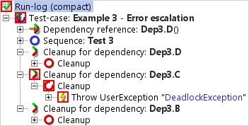 | ||
|
| Figure 8.9: Exception in forced cleanup sequence of C causes B to clean up | ||
For this to work it is very important to write 'Cleanup' sequences in a way that ensures that either the desired state is reached or that an exception is thrown and that there is a more basic dependency with a more encompassing 'Cleanup'. For example, if the 'Cleanup' node for the SUT 'Dependency' just tries to cleanly shut down the SUT through its File->Exit menu without exception handling and further safeguards, an exception in that sequence will prevent the SUT from being terminated and possibly interfere with all subsequent tests. Instead, the shutdown should be wrapped in a Try/Catch with a Finally node that checks that the SUT is really dead and if not, kills the process as a last resort.
|
| 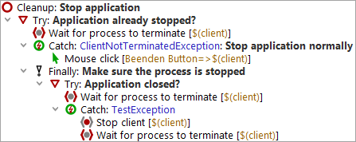 | ||
|
| Figure 8.10: Typical 'Cleanup' node | ||
With good error handling in place, 'Test-cases' will rarely interfere with each other even in case of really bad errors. This helps avoid losing a whole night's worth of test-runs just because of a single error.
Besides supporting automatic escalation of errors a 'Dependency' can also act as an error or exception handler for the tests that depend on it. 'Catch' nodes, which can be placed at the end of a 'Dependency', are used to catch and handle exceptions thrown during a test. Exceptions thus caught will still be reported as exceptions in the run-log and the report, but they will not interfere with subsequent tests or even abort the whole test-run.
An 'Error handler' node is another special node that may be added to a 'Dependency' after the 'Cleanup' and before the 'Catch' nodes. It will be executed whenever the result of a 'Test-case' is "error". In case of an exception, the 'Error handler' node is not executed automatically because that might only cause more problems and even interfere with the exception handling, depending on the kind of exception. To do similar things for errors and exception, implement the actual handler as a 'Procedure' and call it from the 'Error handler' and the 'Catch' node. 'Error handlers' are useful for capturing and saving miscellaneous states that are not automatically provided by QF-Test. For example, you may want to create copies of temporary files created during execution of your SUT that may hold information pertaining to the error.
Only the topmost 'Error handler' that is found on the dependency stack is executed, i.e. if in a dependency stack of [A,B,C,D] both A and C have 'Error handlers', only C's 'Error handler' is run. Otherwise it would be difficult to modify the error handling of the more basic 'Dependency' A in the more specialized 'Dependency' C. To reuse A's error handling code in C, implement it as a 'Procedure'.
Note You might be interested in reading this section in case you want to run several SUTs at the same time where you do not want the 'Dependency' node for a test on one of the SUTs to trigger cleanup actions for another SUT. Otherwise feel free to skip it.
A typical use case would be the test of whole process chains over several applications.
Consider the following situation: Sales representatives enter data for offers via a web application into a database at headquarters. There, the offers will be completed, printed and posted. A copy of each printed offer will be saved in a document management system (DMS).
|
| 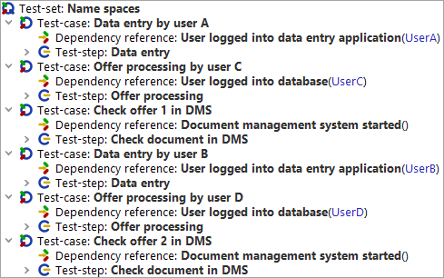 | ||
|
| Figure 8.11: Example 'Test-set' for name spaces | ||
In above example two sales representatives (UserA and UserB) enter offers and two different persons (UserC and UserD) process the offers at headquarters. Then the offers will be checked in the document management system. Since you do not want the dependencies of the test-cases to interfere with one another you need to add a suitable name in the 'Dependency namespace' attribute of each 'Dependency reference' node.
After running the test-set you can see in the run-log that a dependencies stack was set up in the name space 'data entry' for the first test-case:
|
| 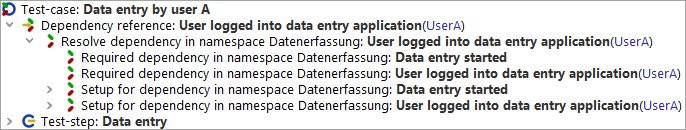 | ||
|
| Figure 8.12: Dependency handling for test-case 'Data entry by User A' | ||
A dependencies stack is set up in the name space 'database' for the second test-case. The dependencies stack in the name space 'data entry' remains unheeded. Looking at the applications, this means the database is started whereas the application for data entry is left as it is.
|
| 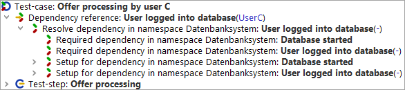 | ||
|
| Figure 8.13: Dependency handling for test-case 'Offer processing by User C' | ||
A dependencies stack is set up in the name space 'DMS' for the third test-case. The dependencies stacks in the name spaces 'data entry' and 'database' remain unheeded. Looking at the applications, this means the document management system is started whereas the other two applications are left as they are.
|
| 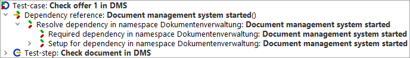 | ||
|
| Figure 8.14: Dependency handling for test-case 'Check offer 1 in DMS' | ||
In test-case number four the required dependencies are checked against the ones on the dependencies stack in the name space 'data entry' of the first test-case. The dependencies stacks in the other two name spaces remain unheeded. Looking at the applications, this means User A is logged off, User B is logged into the data entry application and the other two applications are left as they are.
|
| 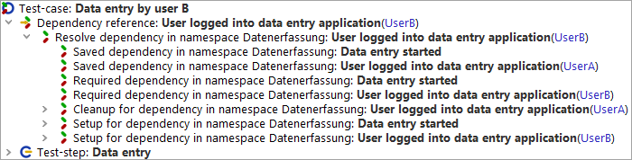 | ||
|
| Figure 8.15: Dependency handling for test-case 'Data entry by User B' | ||
In test-case number five the required dependencies are checked against the ones on the dependencies stack in the name space 'database' of the second test-case. The dependencies stacks in the other two name spaces remain unheeded. Looking at the applications, this means User C is logged off, User D is logged into the database application and again the other two applications are left as they are.
|
|  |
||
|
| Figure 8.16: Dependency handling for test-case 'Offer processing by User D' | ||
In the last test-case the required dependencies are checked against the ones on the dependencies stack in the name space 'DMS' of the third test-case. The dependencies stacks in the other two name spaces remain unheeded. Looking at the applications, this means no clean up action has to be done on the DMS. The other two applications are left as they are, anyway.
|
| 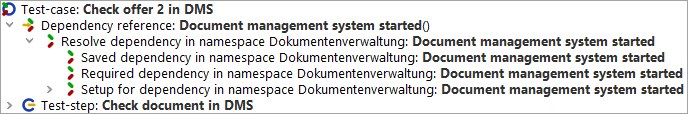 | ||
|
| Figure 8.17: Dependency handling for test-case 'Check offer 2 in DMS' | ||
Like with any programming-related task it is important for successful test-automation to properly document your efforts. Otherwise there is a good chance (some might say a certainty) that you will lose the overview over what you have done so far and start re-implementing things or miss out tests that should have been automated. Proper documentation will be invaluable when working through a run-log, trying to understand the cause of a failed test. It will also greatly improve the readability of test reports.
An easy option for readable and documented tests is to group the recorded nodes into 'Sequence' und 'Test-step' nodes.
For inline documentation you can use the 'Comment' node.
When you want to set up a documentation available outside QF-Test you can do so based on the 'Comment' attributes of 'Test-set', 'Test-case', 'Package' and 'Procedure' nodes, and create a set of comprehensive HTML documents that will make all required information readily available. The various kinds of documents and the methods to create them are explained in detail in chapter 21.
| Last update: 9/6/2022 Copyright © 1999-2022 Quality First Software GmbH |